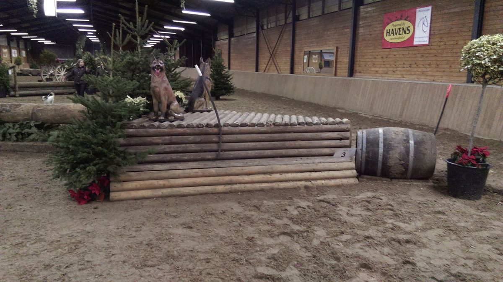
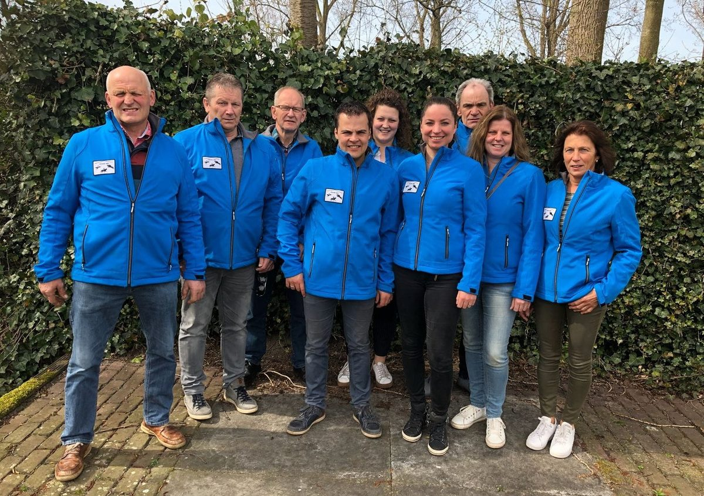

Indoor SGW stylesheet
Eén plek voor alles wat je nodig hebt om iets te maken voor Indoor SGW: website, mail, advertentie of social post. Kleur, letters, knoppen en toon komen rechtstreeks uit de huidige site en zijn hier vastgelegd, zodat elke uiting klopt.
Tone of voice
Indoor SGW is een wedstrijd van ruiters, voor ruiters, gedragen door vrijwilligers. Zo schrijven we ook: enthousiast, gewoon en uitnodigend. Je leest het en je wilt erbij zijn.
Gezellig
Tussen kerst en oud en nieuw, samen in de hal. We schrijven warm en persoonlijk, met de sfeer van een vereniging en niet van een bedrijf.
Sportief en uitdagend
Een echte cross, maar dan binnen. Noem concreet wat er staat: de heuvel, de opsprongen, de afsprongen. Dat maakt nieuwsgierig.
Laagdrempelig
Van pony tot paard, met of zonder SGW-ervaring. Geen moeilijke woorden waar het niet hoeft, wel de vaktermen die ruiters zelf gebruiken.
- Altijd jij en je. Ook in formulieren, mails en juridische teksten waar het kan.
- Ritme: een mix. Korte zinnen voor energie, een langere zin om de sfeer te schetsen.
- Uitroeptekens mogen, maar spaarzaam. Eén per blok is genoeg.
- Data schrijf je uit: 28, 29 en 30 december. Geen streepjes tussen getallen.
- Geen stijlstreepjes in zinnen en geen streepje voor een eyebrow.
Logo en merk
Het beeldmerk is een springend paard met ruiter, met "INDOOR SGW" in een boog erboven. Het logo is monochroom: wit op donker, zwart of petrolblauw op licht. Een full color versie bestaat (nog) niet.
Houd rondom minimaal de hoogte van de letter "S" vrij. Kleinste formaat: 40px breed op scherm, 15 mm in print. Kleiner wordt de tekst in de boog onleesbaar.
- ✓ Wit op petrolblauw, navy of een donkere foto-overlay
- ✓ Zwart of petrolblauw op wit en lichte tints
- ✓ Altijd in verhouding schalen
- ✗ Het logo in staalblauw of goudgeel zetten
- ✗ Wit logo op een drukke foto zonder overlay
- ✗ Paard en tekst los van elkaar gebruiken
- ✗ Schaduw, gloed of omlijning toevoegen
- ✗ Uitrekken, draaien of de boogtekst aanpassen
Kleurenpalet
De merkkleuren komen uit de Elementor global kit van indoorsgw.nl. Staalblauw is de primaire knop, petrolblauw draagt de donkere vlakken en goudgeel is het accent. Geel staat nooit achter witte tekst.
Ink is puur zwart (#000000), zoals de tekstkleur in de kit. Grey #5B6670 haalt 5.87 op wit en mag voor secundaire tekst.
Typografie
Montserrat voor alles wat kop, knop of label is, meestal in hoofdletters. Verdana voor lopende tekst: breed, rustig en goed leesbaar op elk scherm. Verdana is een systeemfont en hoeft niet geladen te worden.
uppercase
clamp(2rem, 1.4rem + 2.6vw, 3.25rem)
lh 1.15
Indoor SGW 2026
uppercase
clamp(1.6rem, 1.25rem + 1.5vw, 2.5rem)
Dé Indoor SGW van Nederland
uppercase
clamp(1.25rem, 1.1rem + .6vw, 1.625rem)
De wedstrijd
uppercase · 1.125rem
Trainingen op 28 en 29 december
uppercase · .875rem
letter-spacing .16em
1rem · lh 1.65
De wedstrijd is verdeeld over twee rijbakken en minimaal 20 crosshindernissen van allerlei formaten en soorten. Een echte heuvel, opsprongen, afsprongen en nog veel meer gave hindernissen maken het compleet.
.875rem
Je inschrijving is pas definitief na bevestiging van de organisatie.
uppercase · .875rem
letter-spacing .06em
400 tot 700 voor de website. 800 en 900 alleen voor marketing en social (zie Marketing).
Spacing
Een schaal op basis van 4px. Binnen componenten gebruik je s-2 tot s-5, tussen blokken s-6 tot s-7 en tussen secties s-8 of s-9.
--s-14px--s-28px--s-312px--s-416px--s-524px--s-632px--s-748px--s-864px--s-996px--s-10128pxMaximale contentbreedte: --max-w: 1200px. Zijmarge op mobiel minimaal 16px.
Radius en schaduw
Op de site domineren 20px (knoppen, blokken) en 50px (pilvorm). Het merk is zacht rond, maar niet speels. Schaduwen zijn licht en hebben een blauwe ondertoon.
4px
8px · inputs
20px · knoppen, kaarten
32px
50px · badges, tabs
kaart in rust
hover, dropdown
modal, cookiebanner
Knoppen
Montserrat Medium in hoofdletters, 20px radius, net als op de site. Staalblauw is de primaire actie, hover gaat naar petrolblauw. Gebruik per blok maximaal één primaire knop.
Badges en labels
Kaarten
Drie patronen die de site nodig heeft: een onderdeelkaart met foto, een infokaart voor trainingen en een dagkaart voor het programma.
 Cross
CrossHindernissen
Een echte heuvel, opsprongen, afsprongen en nog veel meer. Alles om de cross naar binnen te halen.
Bekijk hindernissen Wedstrijd
WedstrijdDe wedstrijd
Dressuur, springen en cross. Alle onderdelen komen aan bod, net als bij een outdoor cross.
Lees meerTrain in de hal
- Voor paarden-, pony- en bixieruiters
- Erkende instructeurs
- Kosteloos annuleren tot 15 december
Trainingen
Paard of pony, alle niveaus
Wedstrijd en trainingen
Dressuur en springen
Wedstrijd
De indoor cross
USP strip
De drie feiten uit de homepage, aangevuld met de ervaring van de organisatie.
25+hindernissen
Trainingenmet erkende instructeurs
3 dagen28, 29 en 30 december
20+ jaarsinds 1999
Formulieren
Gebaseerd op het inschrijfformulier voor de trainingen. Labels in Montserrat, invoer in Verdana, 8px radius en een duidelijke focusring.
Voorbeeld van een slider. Waarden zijn illustratief.
Tabs
Een segmented control in pilvorm. Handig voor de drie wedstrijdonderdelen of voor startlijsten per dag.
Het eerste onderdeel. Rustig beginnen en laten zien wat je samen kunt.
Een springparcours in de tweede rijbak. Het vraagprogramma laat per rubriek de hoogte zien.
Het hoogtepunt: minimaal 20 crosshindernissen in de hal, met een echte heuvel, opsprongen en afsprongen.
Accordion
Voor veelgestelde vragen. Antwoorden komen letterlijk uit de huidige site.
Een training kost € 30 per uur per combinatie. Je inschrijving is pas definitief na bevestiging van de organisatie.
Tot 15 december. Daarna rekenen we de volledige trainingskosten.
Stalling en overnachting regel je via Het Zwarte Water in De Mortel, via info@hetzwartewater.nl. Overnachten in een vrachtwagen kan alleen met eigen stroom, er is ter plekke geen stroom beschikbaar.
Startlijsten en uitslagen publiceren we pas als ze definitief zijn.
Vul het formulier per paard of pony opnieuw in. Zo kunnen we alle inschrijvingen goed verwerken.
Slider
Crossfade met pijlen, dots en toetsenbordbediening. Draait niet automatisch, zodat niemand iets mist.



Modal en popover
Een modal voor korte bevestigingen of inschrijfinfo. Sluit met de knop, de achtergrond of Escape. De popover geeft korte uitleg bij een term.
Bedankt, je staat erop!
We bevestigen je inschrijving zo snel mogelijk per mail. Pas dan is hij definitief. Tot in De Mortel!
Iconen
Lucide, lijndikte 2, kleur petrolblauw of goudgeel op donker. De huidige site gebruikt Font Awesome. Bij een rebuild stappen we over op Lucide voor een rustiger, consistenter lijnbeeld.
Sectie header
Eyebrow, titel en ondertitel. De eyebrow is gewoon tekst, zonder streepje of lijntje ervoor.
Dé Indoor SGW van Nederland
Al meer dan 20 jaar een begrip in de paardensport. Gedragen door een vast team vrijwilligers.
Train in de hal
Met erkende instructeurs, in een groep die past bij jou en je paard.
Beeld en video
De echte hal, de echte hindernissen. Groen van kerstbomen, warm hout en zand. Dat is het beeld van Indoor SGW: herkenbaar december, binnen.




- Liefst actie: combinaties over een hindernis, modder en zand dat opspat.
- Laat de sfeer zien: kerstbomen, publiek, vrijwilligers aan het werk.
- Warm en natuurlijk nabewerken. Geen zware filters.
- Tekst op foto altijd met een petrolblauwe of zwarte overlay van minimaal 55%.
- Fotografen vermelden als dat is afgesproken (bijvoorbeeld ODD fotografie).
Indoor SGW 2026
De hero draait nu een YouTube achtergrondvideo. Advies: een eigen MP4 van maximaal een paar MB, muted autoplay loop playsinline, met een posterframe en een donkere overlay. Dat laadt sneller dan YouTube en toont geen YouTube-logo.
Marketing en social
Voor advertenties en social mag het harder: Montserrat Black in hoofdletters, goudgele highlights op een woord en een lint voor de datum. Dit is een voorstel. De huidige site heeft nog geen aparte marketinglaag.
in de hal
Licht en donker
Wissel af om ritme in een pagina te brengen. Lichte secties voor lezen en formulieren, donkere voor een statement, een CTA of de footer.
Wit
Standaard. Lopende tekst, formulieren, startlijsten.
Blue 50
Rustige afwisseling. FAQ, info, kaartengrids.
Petrol
CTA blokken, USP strip, navigatie, footer.
Navy
Hero overlays en het allerbelangrijkste moment.
Nooit twee donkere secties direct na elkaar, behalve een CTA vlak boven de footer.
Animatie en reveal
Bewegingsniveau: rustig. Een korte fade in bij scrollen en subtiele hovers. De site gebruikt nu fadeIn, fadeInDown en het "sink" hover effect van Elementor. Bij prefers-reduced-motion staat alles stil.
| Token | Waarde | Gebruik |
|---|---|---|
--t | .35s cubic-bezier(.4,0,.2,1) | Hover, kleur, kleine verschuivingen |
--t-lg | .6s cubic-bezier(.22,1,.36,1) | Reveal, slider crossfade, foto zoom |
Statussen
Nog geen startlijst
We publiceren de startlijsten zodra ze definitief zijn. Kom snel terug!
Bekijk vraagprogrammaEven geduld
De uitslagen worden geladen.
Dat ging mis
Het formulier is niet verstuurd. Probeer het nog eens of mail ons op info@indoorsgw.nl.
404 pagina
Deze hindernis staat er niet
De pagina die je zoekt is verplaatst of bestaat niet meer. Geen weigering, gewoon even terug naar de start.
Cookiebanner en zwevende CTA
De site heeft al een cookiebanner linksonder en een zwevende CTA rechtsonder naar het vraagprogramma. Hier in merkstijl en in jij-vorm.
Bekijk hier het vraagprogramma voor de komende wedstrijd.
BekijkGeen WhatsApp of chatknop: de site gebruikt die nu niet. Contact loopt via mail en het contactformulier.
Open vragen voor de klant
Tijdens het uitlezen van de site kwamen deze punten naar boven. We vullen niets in op gevoel. Zodra er antwoord is, passen we de stylesheet aan.
| # | Onderwerp | Wat staat er nu | Vraag |
|---|---|---|---|
| 1 | Dagindeling | Trainingen op 28 en 29 december, wedstrijd op 29 (dressuur en springen) en 30 december (cross). | Bevestigd. Geen actie nodig. |
| 2 | Aantal hindernissen | Homepage USP: "+25 hindernissen". Tekst: "minimaal 20 cross hindernissen". | Welk getal communiceren we? |
| 3 | Trainingsprijs | € 30 per uur per combinatie. Het formulier is inmiddels hernoemd naar 2026. | Geldt deze prijs ook voor 2026? |
| 4 | Juridische gegevens | Geen KVK, adres of statutaire naam op de site. | KVK-nummer, adres en exacte naam van de stichting? |
| 5 | Locatie | Manege Het Zwarte Water, De Mortel. Geen adres op de site. | Mogen we het adres van de manege tonen? |
| 6 | Logo | Alleen PNG in wit en zwart van de site. | Is er een SVG of een kleurversie? |
| 7 | Spelling | "Crossparcour", "manage", "gerenormeerde", "vrijwillger", "ter spraken". | Mogen we dit corrigeren naar crossparcours, manege, gerenommeerde, vrijwilliger, ter sprake? |
| 8 | Naam voorzitter | Bestuur: "Friet van Stiphout". Sponsorlogo: "Fried van Stiphout". | Welke schrijfwijze is juist? |
| 9 | SGW uitleg | Nergens uitgelegd op de site. | Mogen we "samengestelde wedstrijd" gebruiken als uitleg? |
| 10 | Beeld | Vooral foto's van lege hindernissen uit 2022. | Zijn er actiefoto's of video van recente edities? |
Tokens
Alle CSS variabelen bij elkaar. Kopieer het blok in elk nieuw project voor Indoor SGW.
| Variabele | Waarde | Bron of gebruik |
|---|---|---|
| --primary | #426C87 | Kit (accent). Primaire knop |
| --primary-dark | #1F506C | Kit (secondary). Hover, nav, footer, koppen |
| --navy | #163B50 | Afgeleid. Diepe vlakken |
| --accent | #EAB200 | Kit. Highlight met zwarte tekst |
| --accent-dark | #C99A00 | Afgeleid. Hover op accent |
| --ink | #000000 | Kit (text). Lopende tekst |
| --grey | #5B6670 | Secundaire tekst |
| --heading | Montserrat | Kit (primary, secondary, accent) |
| --body | Verdana | Kit (text) |
| --r / --r-pill | 20px / 50px | Dominante radius in de bron |
:root{
/* Merkkleuren */
--primary: #426C87;
--primary-dark: #1F506C;
--navy: #163B50;
--accent: #EAB200;
--accent-dark: #C99A00;
/* Tints */
--blue-50: #F1F5F8;
--blue-100: #E2EAF0;
--blue-200: #C5D4DE;
--blue-300: #9DB5C5;
--accent-50:#FDF6DE;
/* Ink en neutralen */
--ink: #000000;
--grey: #5B6670;
--white: #FFFFFF;
--grey-50: #F7F8FA;
--grey-100: #EEF1F5;
--grey-200: #E1E6EC;
--grey-300: #C9D0DA;
--grey-400: #9AA3B2;
--grey-700: #3A434F;
/* Feedback */
--success: #2A7349;
--error: #B3261E;
--warning: #8F5B00;
/* Typografie */
--heading: "Montserrat", "Helvetica Neue", Arial, sans-serif;
--body: Verdana, Geneva, "DejaVu Sans", sans-serif;
--display: "Montserrat", "Helvetica Neue", Arial, sans-serif;
--fs-h1: clamp(2rem, 1.4rem + 2.6vw, 3.25rem);
--fs-h2: clamp(1.6rem, 1.25rem + 1.5vw, 2.5rem);
--fs-h3: clamp(1.25rem, 1.1rem + .6vw, 1.625rem);
--fs-h4: 1.125rem;
--fs-body: 1rem;
--fs-small: .875rem;
--fs-xs: .75rem;
/* Spacing */
--s-1: 4px; --s-2: 8px; --s-3: 12px; --s-4: 16px; --s-5: 24px;
--s-6: 32px; --s-7: 48px; --s-8: 64px; --s-9: 96px; --s-10: 128px;
/* Layout */
--max-w: 1200px;
/* Radius */
--r-xs: 4px; --r-sm: 8px; --r: 20px; --r-lg: 32px; --r-pill: 50px;
/* Schaduw */
--shadow-sm: 0 1px 2px rgba(22,59,80,.08), 0 2px 6px rgba(22,59,80,.06);
--shadow: 0 4px 14px rgba(22,59,80,.10), 0 8px 28px rgba(22,59,80,.08);
--shadow-lg: 0 18px 50px rgba(22,59,80,.20);
/* Motion */
--t: .35s cubic-bezier(.4,0,.2,1);
--t-lg: .6s cubic-bezier(.22,1,.36,1);
}
Opgesteld op basis van indoorsgw.nl, oktober 2026. Development door EquiMarketing.